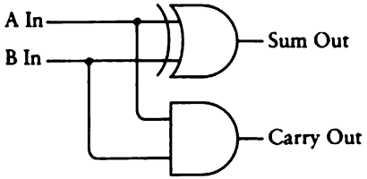

Binary Adding Machine
2022-08-21
Recently, I have began reading the renowned "Code: The Hidden Language of Computer Hardware and Software" by Charles Petzold. You can find it here. I highly recommend this book, especially if you're new to computer science. Charles does a wonderful job of explaining challenging topics in a digestable and beginner friendly manner. I should also mention that a second edition of this book has recently been released, which you can find here.
In chapter twelve, Charles describes how to make a simple binary adding machine to add two 8-bit binary numbers. I decided to create an implementation of this machine in Minecraft and also in JavaScript. The full JavaScript repository can be found here.
In this post, we will walk through the entire process step by step. I will show how I was able to follow the instructions in chapter twelve to create this machine in both JavaScript and Minecraft. If you would like a more in-depth explanation of any of the following topics, I encourage you to read chapter twelve of the aforementioned book.
Introduction
To add two 8-bit binary numbers, we first need to be able to add two 1-bit binary numbers. The sum of these two 1-bit numbers will be a 2-bit number. We'll call the first bit of this 2-bit number the "sum" bit and the second the "carry" bit. If you wanted to sing a song about it, you might say:
0 plus 0 equals 0.
0 plus 1 equals 1.
1 plus 0 equals 1.
1 plus 1 equals 0, carry the 1.
The following addition table describes the sums of our two 1-bit numbers.


Logic Gates
To do all of this, we need to make some logic gates. We'll start with the AND gate, because we can use it to calculate the carry bit. Here is the AND gate I have built in Minecraft (with a little help from Mumbo Jumbo).

REPLACE THIS VIDEO TO SHOW THE FULL TRUTH TABLE!!!
As you can see, the output is a voltage only if both the inputs are a voltage. If one or the other inputs is not a voltage, the output is not a voltage.
Here is the AND gate I created in JavaScript:
// AND gate
const andGate = (a, b) => {
if (a && b) {
// Both inputs are a voltage, therefore the output is a voltage
return 1
} else {
// Both inputs are NOT a voltage, therefore the output is NOT a voltage
return 0
}
}
We can use this truth table to confirm our implementations are correct.

This is the symbol electrical engineers use to describe an AND gate:

Now we need a gate to calculate our sum bit. To create a gate that can perform this calculation, we first need to create two more logic gates: the OR and the NAND gate.
Here is the OR gate I made in Minecraft:

REPLACE THIS VIDEO TO SHOW THE FULL TRUTH TABLE!!!
Notice that the output is a voltage if either (or both) of the inputs is a voltage.
This is the OR gate I made in JavaScript:
// OR gate
const orGate = (a, b) => {
if (a | b) {
// Either a or b is a voltage, therefore the output is a voltage
return 1
} else {
// Neither a nor b are a voltage, therefore the output is NOT a voltage
return 0
}
}
We can confirm that these implementations obey this truth table.

This is the symbol for the OR gate:

The NAND gate is simply the AND gate with an inverted output. So all I did in Minecraft was add an inverter to the output of the original AND gate.

In JavaScript:
// NAND gate
const nandGate = (a, b) => {
if (a && b) {
// Both inputs are a voltage, therefore the output is NOT a voltage
return 0
} else {
// Both the inputs are NOT a voltage, therefore the output is a voltage
return 1
}
}
Truth table for the NAND gate:

The following symbol describes the NAND gate.

Notice how it's exactly the same as the AND gate symbol, but with a little circle on the output. This little circle means the signal is inverted at that point.
Why did we create these two gates you ask? What do these gates have to do with calculating the sum bit? If we connect the two outputs of these gates to an AND gate, we get an XOR gate. We can use a XOR gate to calculate our sum bit.
Here is the XOR gate I have built in Minecraft:

As you can see, I connected the A and B inputs of the OR gate (on the left) to the A and B inputs of the NAND gate (on the right), just like this:

And then I connected their outputs to the inputs of an AND gate, like this:

Now let's confirm that this implementation obeys the following truth table.


Here is the symbol for the XOR gate:

And my JavaScript implementation:
// XOR gate
const xorGate = (a, b) => {
return andGate(orGate(a, b), nandGate(a, b))
}
This is great! Now that we can calculate both our carry and our sum bit, we are well on our way to adding two 1-bit binary numbers. We can combine our AND gate and XOR gate to add two binary digits.

As you can see, I connected the A and B inputs of the XOR gate to the corresponding A and B inputs of the AND gate, just like the following picture.

This assortment of gates is called a "Half Adder". It's called a Half Adder because it can only add two 1-bit binary numbers. It does not add a possible carry bit from a previous addition. On its own, this isn't very useful, because the vast majority of binary nubmers are longer than 1 bit.
Here is the Half Adder I made in JavaScript:
/**
* Half adder
*/
const halfAdder = (a, b) => {
const sumOut = xorGate(a, b)
const carryOut = andGate(a, b)
return `${sumOut}${carryOut}`
}
Here is the symbol we'll use to refer to a half adder:

To add three binary digits, we need two Half Adders and an OR gate, wired like this:

In Minecraft, I connected the Sum Out of the first half adder to the B input of the second half adder. I also added an additional Carry In line which serves as the A input to the second adder.

And I've connected the Carry Out of the first and second half adders to the A and B inputs of an OR gate.

We can call this assemblage a "Full Adder". Now let's confirm that our new Full Adder obeys the following table.


This symbol indicates a Full Adder:

Here is my JavaScript implementation:
/**
* Full adder
*/
const fullAdder = (a, b, cin) => {
// First, we need the Sum out of the first adder
const firstAdderOutput = halfAdder(a, b)
const firstSumOut = parseInt(firstAdderOutput[0])
const firstCarryOut = parseInt(firstAdderOutput[1])
// Then we pass Carry In, First Sum Out as A B to the second adder
const secondAdderOutput = halfAdder(cin, firstSumOut)
const secondSumOut = parseInt(secondAdderOutput[0])
const secondCarryOut = parseInt(secondAdderOutput[1])
// Then we pass the first Carry Out, and the second Carry Out as inputs to the OR gate
const orGateOutput = orGate(secondCarryOut, firstCarryOut)
// Sum Out // Carry Out
return `${secondSumOut}${orGateOutput}`
}
We're just about finished. We just need to line up eight Full Adders in an array like this:

Just like this diagram.

Then connect the Carry Out of each Full Adder to the Carry In of the next.

The rest is pretty simple as we just need to make the control panel and connect it to the Full Adders.

I connected the top row of levers to the corresponding A inputs of each Full Adder, and the bottom row of levers to the B inputs. Then I connected the eight sum outputs of each Full Adder, as well as the carry output of the final Full Adder, to the row of lights on the bottom.
Finally, we can check to make sure our implementation is correct. Let's try adding the numbers from the book 0110-0101 and 1011-0110.

And it works! The sum of 0110-0101 and 1011-0110 is 1-0001-1011, as indicated by the bottom row of lamps. The full JavaScript implementation can be found here.